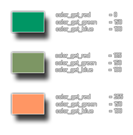

Obtiene el componente rojo de un color dado
Sintaxis
colour_get_red(col);
Argumentos
| Argumento | Descripción |
|---|---|
| col | El color al cual obtener el componente rojo |
Descripción
Esta función devuelve la "cantidad de rojo" que
determinado color. Este componente es un número entero de
0 a 255, donde 0 significa "sin rojo" y 255
"con todo el rojo". La siguiente imagen ilustra
esto:

Devuelve
Entero
Ejemplo
color = c_teal; comp_rojo = colour_get_red(color);El código anterior obtendrá el componente rojo de la constante de color
c_teal y lo
almacenará en la variable comp_rojo.